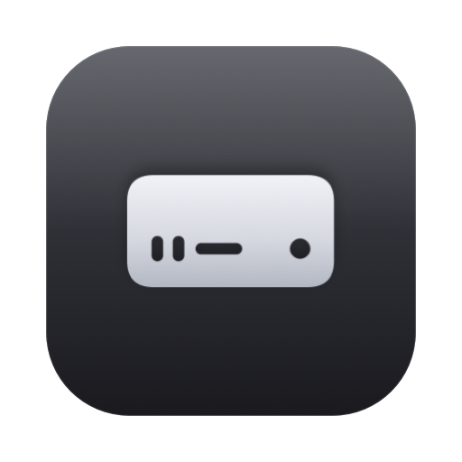

Sit down. Everything’s back.
Physical monitors come on, each with its own brightness and on/off state remembered — even after sleep. Turn any single monitor off and the others stay put.

For Mac mini & Mac Studio
Workstation turns the Mac under your desk into a headless workstation you drive from your MacBook. Monitors stay dark, the screen is sized to your laptop, and sleep sips power — one click, or one command.
Free · Native Swift · macOS 13 or later
Other display tools assume there’s a monitor on your desk.
Workstation assumes there isn’t.
Keep the Mac Studio in another room, or on a shelf with the monitors dark. Connect from your MacBook over Screen Sharing or SSH and get a desktop that fits your laptop pixel-for-pixel — while the real monitors stay off and never wake up from remote input.
Physical monitors come on, each with its own brightness and on/off state remembered — even after sleep. Turn any single monitor off and the others stay put.
Monitors are cut, low-power mode kicks in and no virtual screen is ever opened. Wake it up and you’re back on Desktop.
The physical monitors switch off and a HiDPI virtual screen appears, sized to the Mac that connects — 1512×982 for a 14″ MacBook Pro. The Mac never sleeps, and the monitors only come back when you choose Desktop.
Wake it, switch it, connect — from anywhere on your network.
~ %
✔ Virtual screen 1512×982 HiDPI · monitors off · never sleeps
~ % workstation-connect
✔ Woke studio.local · Remote · opening Screen Sharing…workstation-connect — or open workstation://remote.Auto, Half or Full Blast. Safe by design: falls back to automatic on sleep, quit or any error.
Old builds, caches and AI-agent leftovers. Never touches files in use or active projects — re-checked right before every delete, sent to the Trash.
Switch to Remote when someone connects, schedule Sleep at night, profiles, keep-awake and Shortcuts via workstation:// links.
Native Swift and AppKit, no third-party libraries. Nothing runs in a loop while idle — and it updates itself from GitHub Releases.
Open the DMG, drag Workstation to Applications, done.
Download the latest releasev1.9.8 · macOS 13+